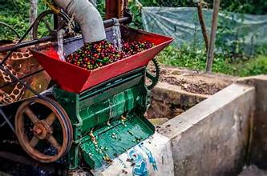
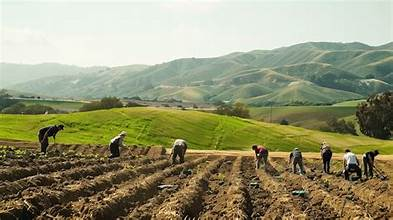

Our Farm & Coffee Products
Coffee Varieties
Our farm cultivates both Arabica and Robusta coffee varieties. Arabica is grown at higher elevations for its smooth, rich flavor, while Robusta thrives in lower areas producing a strong and bold coffee.
Coffee Processing Methods
We use sustainable and high-quality processing methods, including:
- Washed Process: For clean and bright Arabica coffee flavors.
- Natural/Dry Process: Sun-dried to enhance sweetness and aroma.
- Pulped Natural: Semi-washed method giving a balanced flavor profile.
Farming Practices
Our farmers follow eco-friendly and sustainable farming practices:
- Shade-grown coffee to protect biodiversity.
- Organic fertilizers and minimal chemical use.
- Crop rotation and intercropping to maintain soil health.
Farm Photos




Community & Livelihood Activities
ICFAI empowers the community through various programs:
- Farmer training on sustainable coffee cultivation.
- Market access support for selling coffee locally and internationally.
- Community projects including local events and cooperative initiatives.